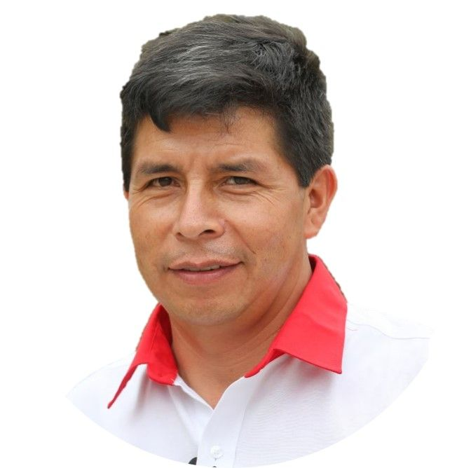

| Partido | ||
|---|---|---|
| Organización Politica | Fuerza Popular | Perú Libre |
| Imagen |  | |
| Candidato | Keiko Fujimori | Pedro Castillo |
| Primer Vicepresidente | Luis Galarreta | Dina Boluarte |
| Segundo Vicepresidente | Patricia Juárez | Vladimir Cerrón |
| Profesión | Administración de empresas | Docente |
| Edad | 45 | 51 |
| Tiempo de afiliación al partido | 11 años y 8 meses | 0 años y 6 meses |
| Cargos electo anterior | Congresista 2006 | Perú Libre |
| Organización Politica | Fuerza Popular | Ninguno |
| N. de partidos afiliado | 1 | 2 |
| Última postulación | Presidente 2016 | Alcalde de Anguia |